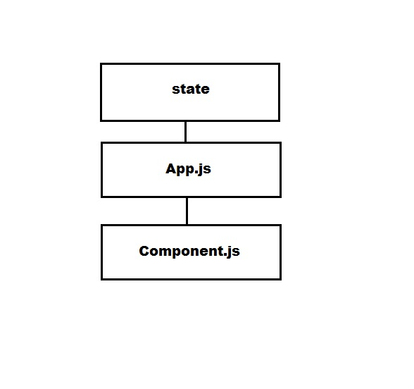
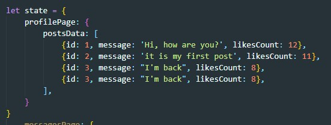
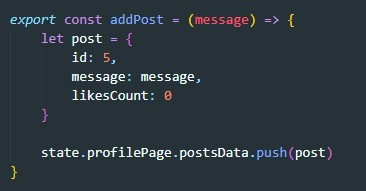
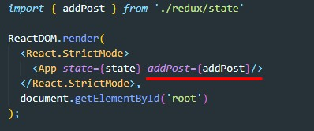
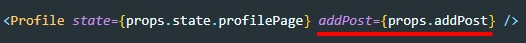
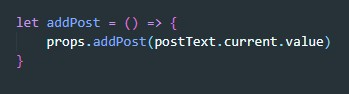

Рассмотрим схему:
У нас есть определенный state (как правило это массив значений, обычно объектов, которые описывают что-то. Например сообщение или комментарий)
Как мы отрисовываем наш state? В качестве props мы прокидываем наш state в App.js? затем так же через props передаем его в компоненту, там мы данные мапим (map) и происходит отрисовка.
Но как нам быть, если нужно в компоненте отредактировать наш state (например добавить сообщение или коммент)?
Для этого нам нужно в файле где создается state создать функцию по изменению этого state и передать эту функцию через props до нашей компоненты. Эта функция должна принимать аргументы, которые будут передаваться в нашей компоненте. Т.е. эта функция будет вызываться в компоненте, но выполняться в том файле где была объявлена.
Рассмотрим пример
У нас есть state. Это Массив объектов с постами:
Создадим функцию которая будет пушить в массив новый объект
Импортируем эту функцию в файле index.js и передадим ее в каччестве props-а компоненте App.js
После этого, так же через props передаем функцию в копмоненту
В компоненте мы создаем функцию, которая будет вызываться по нажатии на кнопку добавить пост. Вот как выглядит эта функция:
Здесь через props мы обращаемся к функции, вызываем ее и на вход даем значение элемента textarea который мы получили через ref